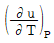
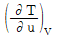
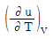
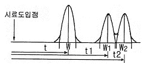

가스기사 (2016-08-21 기출문제)
1과목: 가스유체역학
1. 다음 단위 간의 관계가 옳은 것은?
- 1N＝9.8㎏·m/s2
- 1J＝9.8㎏·m2/s2
- 1W＝1㎏·m2/s3
- 1Pa＝105㎏/m·s2
(정답률: 65%)

2. 수면 차이가 20m인 매우 큰 두 저수기 사이에 분당 60m3으로 펌프가 물을 아래에서 위로 이송하고 있다. 이때 전체 손실수두는 5m이다. 펌프의 효율이 0.9일 때 펌프에 공급해 주어야 하는 동력은 얼마인가?
- 163.3kW
- 220.5kW
- 245.0kW
- 272.2kW
(정답률: 51%)
3. 운동 부분과 고정 부분이 밀착되어 있어서 배출공간에서부터 흡입공간으로의 역류가 최소화되며, 경질 윤활유와 같은 유체수송에 적합하고 배출압력을 200atm 이상 얻을 수 있는 펌프는?
- 왕복펌프
- 회전펌프
- 원심펌프
- 격막펌프
(정답률: 58%)
4. 이상기체에서 소리의 전파속도(음속) a는 다음 중 어느 값에 비례 하는가?
- 절대온도의 제곱근
- 압력의 세제곱
- 밀도
- 부피의 세제곱
(정답률: 85%)
5. 상부가 개방된 탱크의 수위가 4m를 유지하고 있다. 이 탱크 바닥에 지름 1㎝의 구멍이 났을 경우 이 구멍을 통하여 유출되는 유속은?
- 7.85m/s
- 8.85m/s
- 9.85m/s
- 10.85m/s
(정답률: 74%)
6. Newton 유체를 가장 옳게 설명한 것은?
- 비압축성 유체로써 속도구배가 항상 일정한 유체
- 전단응력이 속도구배에 비례하는 유체
- 유체가 정지상태에서 항복응력을 갖는 유체
- 전단응력이 속도구배에 관계없이 항상 일정한 유체
(정답률: 58%)
7. 비중이 0.887인 원유가 관의 단면적이 0.0022m2인 관에서 체적 유량이 10.0m3/h일 때 관의 단위 면적당 질량유량(㎏/m2·s)은?
- 1,120
- 1,220
- 1,320
- 1,420
(정답률: 52%)
8. 밀도의 차원을 MLT 계로 옳게 표시한 것은?
- ML-3
- ML-2
- MLT-2
- MLT-1
(정답률: 65%)
9. 단면적이 변하는 관로를 비압축성 유체가 흐르고 있다. 지름이 15㎝인 단면에서의 평균속도가 4m/s 이면 지름이 20㎝인 단면에서의 평균속도는 몇 m/s인가?
- 1.⑤
- 1.25
- 2.⑤
- 2.25
(정답률: 70%)
10. 압축성 이상기체(compressible ideal gas)의 운동을 지배하는 기본 방정식이 아닌 것은?
- 에너지방정식
- 연속방정식
- 차원방정식
- 운동량방정식
(정답률: 76%)
11. 펌프를 사용하여 지름이 일정한 관을 통하여 물을 이송하고 있다. 출구는 입구보다 3m위에 있고 입구압력은 1㎏f/cm2, 출구압력은 1.75㎏f/cm2이다. 펌프수두가 15m일 때 마찰에 의한 손실수두는?
- 1.5m
- 2.5m
- 3.5m
- 4.5m
(정답률: 38%)
12. 비압축성 유체가 흐르는 유로가 축소될 때 일어나는 현상 중 틀린 것은?
- 압력이 감소한다.
- 유량이 감소한다.
- 유속이 증가한다.
- 질량 유량은 변화가 없다.
(정답률: 75%)
13. 다음 중 점성(viscosity)와 관련성이 가장 먼 것은?
- 전단응력
- 점성계수
- 비중
- 속도구배
(정답률: 72%)
14. 이상기체에서 정적비열의 정의로 옳은 것은?

- KCP


(정답률: 68%)
15. 비압축성 유체가 매끈한 원형관에서 난류로 흐르며 Blasius 실험식과 잘 일치한다면 마찰계수와 레이놀즈수의 관계는?
- 마찰계수는 레이놀즈수에 비례한다.
- 마찰계수는 레이놀즈수에 반비례한다.
- 마찰계수는 레이놀즈수의 1/4승에 비례한다.
- 마찰계수는 레이늘즈수의 1/4승에 반비례한다.
(정답률: 58%)
16. 20㎏f의 저항력을 받는 평판을 2m/s로 이동할 때 필요한 동력은?
- 0.25PS
- 0.36PS
- 0.53PS
- 0.63PS
(정답률: 50%)
17. 원심 송풍기에 속하지 않는 것은?
- 다익 송풍기
- 레이디얼 송풍기
- 터보 송풍기
- 프로펠러 송풍기
(정답률: 73%)
18. 지름 8㎝인 원관 속을 동점성계수가 1.5×10-6m2/s인 물이 0.002m3/s의 유량으로 흐르고 있다. 이때 레이놀드수는 약 얼마인가?
- 20000
- 21221
- 21731
- 22333
(정답률: 70%)
19. 압축성 유체흐름에 대한 설명으로 가장 거리가 먼 것은?
- Mach 수는 유체의 속도와 음속의 비로 정의된다.
- 단면이 일정한 도관에서 단열마찰흐름은 가역적이다.
- 단면이 일정한 도관에서 등온마찰흐름은 비단열적이다.
- 초음속 유동일 때 확대 도관에서 속도는 점점 증가한다.
(정답률: 49%)
20. 매끈한 직원관 속의 액체 흐름이 층류이고 관내에서 최대속도가 4.2m/s로 흐를 때 평균속도는 약 몇 m/s인가?
- 4.2
- 3.5
- 2.1
- 1.75
(정답률: 82%)
2과목: 연소공학
21. 최소산소농도(MOC)와 이너팅(Inerting)에 대한 설명으로 틀린 것은?
- LFL(연소하한계)은 공기 중의 산소량을 기준으로 한다.
- 화염을 전파하기 위해서는 최소한의 산소농도가 요구된다.
- 폭발 및 화재는 연료의 농도에 관계없이 산소의 농도를 감소시킴으로서 방지할 수 있다.
- MOC값은 연소반응식 중 산소의 양론계수와 LFL(연소하한계)의 곱을 이용하여 추산할 수 있다.
(정답률: 64%)
22. 가스터빈 장치의 이상사이클을 Brayton사이클이라고도 한다. 이 사이클의 효율을 증대시킬 수 있는 방법이 아닌 것은?
- 터빈에 다단팽창을 이용한다.
- 기관에 부딪치는 공기가 운동에너지를 갖게 하므로 압력을 확산기에서 증가시킨다.
- 터빈을 나가는 연소 기체류와 압축기를 나가는 공기류 사이에 열교환기를 설치한다.
- 공기를 압축하는데 필요한 일은 압축과정을 몇 단계로 나누고, 각 단 사이에 중간 냉각기를 설치한다.
(정답률: 60%)
23. 연소에 대한 설명 중 옳지 않은 것은?
- 연료가 한번 착화하면 고온으로 되어 빠른 속도로 연소한다.
- 환원반응이란 공기의 과잉 상태에서 생기는 것으로 이때의 화염을 환원염이라 한다.
- 고체, 액체 연료는 고온의 가스분위기 중에서 먼저 가스화가 일어난다.
- 연소에 있어서는 산화 반응뿐만 아니라 열분해반응도 일어난다.
(정답률: 77%)
24. 자연발화온도(AIT)는 외부에서 착화원을 부여하지 않고 증기가 주위의 에너지로부터 자발적으로 발화하는 최저온도이다. 다음 설명 중 틀린 것은?
- 부피가 클수록 AIT는 낮아진다.
- 산소농도가 클수록 AIT는 낮아진다.
- 계의 압력이 높을수록 AIT는 낮아진다.
- 포화탄화수소 중 iso-화합물이 n-화합물보다 AIT가 낮다.
(정답률: 66%)
25. 고압, 비반응성 기체가 들어 있는 용기의 파열에 의한 폭발은 다음 중 어떠한 폭발인가?
- 기계적 폭발
- 화학적 폭발
- 분진폭발
- 개방계 폭발
(정답률: 70%)
26. Fireball에 의한 피해로 가장 거리가 먼 것은?
- 공기팽창에 의한 피해
- 탱크파열에 의한 피해
- 폭풍압에 의한 피해
- 복사열에 의한 피해
(정답률: 71%)
27. 어떤 과학자가 대기압 하에서 물의 어는점과 끓는점 사이에서 운전할 때 열효율이 28.6%인 열기관을 만들었다고 발표하였다. 다음 설명 중 옳은 것은?
- 근거가 확실한 말이다.
- 경우에 따라 있을 수 있다.
- 근거가 있다 없다 말할 수 없다.
- 이론적으로 있을 수 없는 말이다.
(정답률: 73%)
28. 등엔트로피 과정은 다음 중 어느 것인가?
- 가역 단열과정
- 비가역 단열과정
- Polytropic 과정
- Joule-Thomson 과정
(정답률: 89%)
29. C3H8을 공기와 혼합하여 완전연소시킬 때 혼합기체 중 C3H8의 최대농도는 약 얼마인가? (단, 공기 중 산소는 20.9%이다.)
- 3vol%
- 4vol%
- 5vol%
- 6vol%
(정답률: 64%)
30. 불활성화(inerting)가스로 사용할 수 없는 가스는?
- 수소
- 질소
- 이산화탄소
- 수증기
(정답률: 77%)
31. 125℃, 10atm에서 압축계수(Z)가 0.96일 때 NH3(g) 35㎏의 부피는 약 몇 Nm3인가? (단 N의 원자량 14, H의 원자량은 1이다.)
- 2.81
- 4.28
- 6.45
- 8.54
(정답률: 54%)
32. 1㎏의 공기가 127℃에서 열량 300kcal를 얻어 등온팽창한다고 할 때 엔트로피의 변화량(kcal/㎏·K)은?
- 0.493
- 0.582
- 0.651
- 0.750
(정답률: 58%)
33. 발열량이 24000kcal/m3인 LPG 1m3에 공기 3m3을 혼합하여 희석 하였을 때 혼합기체 1m3 당 발열량은 몇 kcal인가?
- 5000
- 6000
- 8000
- 16000
(정답률: 72%)
34. 연료가 구비해야 될 조건에 해당하지 않는 것은?
- 발열량이 높을 것
- 조달이 용이하고 자원이 풍부할 것
- 연소 시 유해가스를 발생하지 않을 것
- 성분 중 이성질체가 많이 포함되어 있을 것
(정답률: 82%)
35. 기체연료의 연소에서 화염전파의 속도에 영향을 가장 적게 주는 요인은?
- 압력
- 온도
- 가스의 점도
- 가연성 가스와 공기와의 혼합비
(정답률: 79%)
36. 온도에 따른 화학반응의 평형상수를 옳게 설명한 것은?
- 온도가 상승해도 일정하다.
- 온도가 하강하면 발열반응에서는 감소한다.
- 온도가 상승하면 흡열반응에서는 감소한다.
- 온도가 상승하면 발열반응에서는 감소한다.
(정답률: 48%)
37. 연소 시 발생하는 분진을 제거하는 장치가 아닌 것은?
- 백 필터
- 사이클론
- 스크린
- 스크러버
(정답률: 63%)
38. 다음 중 폭발방호(Explosion Protection)의 대책이 아닌 것은?
- Venting
- Suppression
- Containment
- Adiabatic Compression
(정답률: 74%)
39. 수소(H2)가 완전 연소할 때의 고위발열량(Hh)과 저위발열량(HL)의 차이는 약 몇 kJ/kmol인가? (단, 물의 증발열은 273K, 포화상태에서 2501.6kJ/㎏이다.)
- 40240
- 42410
- 44320
- 45070
(정답률: 40%)
40. 공기 중에 압력을 증가시키면 일정 압력 까지는 폭발범위가 좁아지다가 고압으로 올라가면 반대로 넓어지는 가스는?
- 수소
- 일산화탄소
- 메탄
- 에틸렌
(정답률: 62%)
3과목: 가스설비
41. 원유, 중유, 나프타 등 분자량이 큰 탄화수소를 원료로 하며 800~900℃의 고온에서 분해시켜 약 10000kcal/Nm3 정도의 가스를 제조하는 공정은?
- 열분해공정
- 접촉분해공정
- 부분연소공정
- 고압수증기개질공정
(정답률: 84%)
42. 신규 용기의 내압시험 시 전 증가량이 100cm3이었다. 이 용기가 검사에 합격하려면 영구증가량은 몇 cm3 이하이어야 하는가?
- 5
- 10
- 15
- 20
(정답률: 83%)
43. 가스의 종류와 용기표면의 도색이 틀린 것은?
- 의료용 산소 : 녹색
- 수소 : 주황색
- 액화염소 : 갈색
- 아세틸렌 : 황색
(정답률: 74%)
44. 압력조정기에 대한 설명으로 틀린 것은?
- 2단 감압식 2차용 조정기는 1단 감압식 저압조정기 대신으로 사용할 수 없다.
- 2단 감압식 1차 조정기는 2단 감압 방식의 1차용으로 사용되는 것으로서 중압 조정기라고도 한다.
- 자동 절체식 분리형 조정기는 1단 감압방식이며 자동교체와 1차 감압기능이 따로 구성되어 있다.
- 1단 감압식 준저압조정기는 일반소비자의 생활용 이외의 용도에 공급하는 경우에 사용되고 조정압력의 종류가 다양하다.
(정답률: 54%)
45. 가스배관이 콘크리트 벽을 관통할 경우 배관과 벽 사이에 절연을 하는 가장 주된 이유는?
- 누전을 방지하기 위하여
- 배관의 부식을 방지하기 위하여
- 배관의 변형 여유를 주기 위하여
- 벽에 의한 배관의 기계적 손상을 막기 위하여
(정답률: 77%)
46. 터빈펌프에서 속도에너지를 압력에너지로 변환하는 역할을 하는 것은?
- 회전차(impeller)
- 안내깃(guide vane)
- 와류실(volute casing)
- 와실(whirl pool chamber)
(정답률: 72%)
47. LPG 자동차에 설치되어 있는 베이퍼라이져(Vaporizer)의 주요 기능은?
- 압력승압 - 가스 기화
- 압력감압 - 가스 기화
- 공기, 연료 혼합 - 타르 배출
- 공기, 연료 혼합 - 가스 차단
(정답률: 68%)
48. -160℃의 LNG(액비중 : 0.62, 메탄 : 90%, 에탄 : 10%)를 기화(10℃) 시키면 부피는 약 몇 m3가 되겠는가?
- 827.4
- 82.74
- 356.3
- 35.6
(정답률: 35%)
49. 원심펌프를 병렬로 연결시켜 운전하면 어떻게 되는가?
- 양정이 증가한다.
- 양정이 감소한다.
- 유량이 증가한다.
- 유량이 감소한다.
(정답률: 71%)
50. 공동 주택에 압력 조정기를 설치할 경우 설치기준으로 맞는 것은?
- 공동주택 등에 공급되는 가스압력이 중압이상으로서 전세대수가 200세대 미만인 경우 설치할 수 있다.
- 공동주택 등에 공급되는 가스압력이 저압으로서 전세대수가 250세대 미만인 경우 설치할 수 있다.
- 공동주택 등에 공급되는 가스압력이 중압이상으로서 전세대수가 300세대 미만인 경우 설치할 수 있다.
- 공동주택 등에 공급되는 가스압력이 저압으로서 전세대수가 350세대 미만인 경우 설치할 수 있다.
(정답률: 67%)
51. LP가스 소비시설에서 설치 용기의 개수 결정 시 고려할 사항으로 거리가 먼 것은?
- 최대소비수량
- 용기의 종류(크기)
- 가스발생능력
- 계량기의 최대용량
(정답률: 60%)
52. 다음 중 이상기체에 가장 가까운 기체는?
- 고온, 고압의 기체
- 고온, 저압의 기체
- 저온, 고압의 기체
- 저온, 저압의 기체
(정답률: 74%)
53. 정전기 제거 또는 발생방지 조치에 대한 설명으로 틀린 것은?
- 상대습도를 낮춘다.
- 대상물을 접지시킨다.
- 공기를 이온화시킨다.
- 도전성 재료를 사용한다.
(정답률: 76%)
54. 도시 가스배관의 접합시공방법 중 원칙적으로 규정된 접합시공방법은?
- 기계적 접합
- 나사 접합
- 플랜지 접합
- 용접 접합
(정답률: 79%)
55. LNG 냉열 이용에 대한 설명으로 틀린 것은?
- LNG를 기화시킬 때 발생하는 한냉을 이용하는 것이다.
- LNG냉열로 전기를 생산하는 발전에 이용할 수 있다.
- LNG는 온도가 낮을수록 냉열이용량은 증가한다.
- 국내에서는 LNG냉열을 이용하기 위한 타당성 조사가 활발하게 진행 중이며 실제 적용한 실적은 아직 없다.
(정답률: 73%)
56. 일반 도시가스사업소에 설치하는 매몰형 정압기의 설치에 대한 설명으로 옳은 것은?
- 정압기 본체는 두께 3㎜ 이상의 철판에 부식방지 도장을 한 격납상자 안에 넣어 매설한다.
- 철근콘크리트 구조의 그 두께는 200㎜ 이상으로 한다.
- 정압기의 기초는 바닥 전체가 일체로 된 철근콘크리트 구조로 한다.
- 격납상자 쪽의 도입관의 말단부에는 누출된 가스를 포집할 수 있는 직경 10㎝ 이상의 포집 갓을 설치한다.
(정답률: 63%)
57. 대기압에서 1.5MPa·g까지 2단 압축기로 압축하는 경우 압축동력을 최소로 하기 위해서는 중간압력을 얼마로 하는 것이 좋은가?
- 0.2MPa·g
- 0.3MPa·g
- 0.5MPa·g
- 0.75MPa·g
(정답률: 56%)
58. 압축기에 관한 용어에 대한 설명으로 틀린 것은?
- 간극용적 : 피스톤이 상사점과 하사점의 사이를 왕복할 때의 가스의 체적
- 행정 : 실린더 내에서 피스톤이 이동하는 거리
- 상사점 : 실린더 체적이 최소가 되는 점
- 압축비 : 실린더 체적과 간극 체적과의 비
(정답률: 58%)
59. 제트펌프의 구성이 아닌 것은?
- 노즐
- 슬로트
- 베인
- 디퓨저
(정답률: 55%)
60. 수소에 대한 설명으로 틀린 것은?
- 암모니아 합성의 원료로 사용된다.
- 열전달율이 작고 열에 불안정하다.
- 염소와이 혼합 기체에 일광을 쬐면 폭발한다.
- 고온, 고압에서 강제 중의 탄소와 반응하여 수소취성을 일으킨다.
(정답률: 81%)
4과목: 가스안전관리
61. 독성가스설비를 수리할 때 독성가스의 농도를 얼마 이하로 하여야 하는가?
- 18% 이하
- 22% 이하
- TLV-TWA 기준농도 이하
- TLV-TWA 기준농도 1/4 이하
(정답률: 74%)
62. 고압가스 냉동시설에서 냉동능력의 합산기준으로 틀린 것은?
- 냉매가스가 배관에 의하여 공통으로 되어 있는 냉동 설비
- 냉매계통을 달리하는 2개 이상의 설비가 1개의 규격품으로 인정되는 설비 내에 조립되어 있는 것
- 1원(元) 이상의 냉동방식에 의한 냉동설비
- Brine을 공통으로 하고 있는 2 이상의 냉동설비
(정답률: 69%)
63. 고압가스 충전용기의 운반 시 용기 사이에 용기충격을 최소한으로 방지하기 위해 설치하는 것은?
- 프로텍터
- 캡
- 완충판
- 방파판
(정답률: 65%)
64. 동절기 습도가 낮은 날 아세틸렌 용기밸브를 급히 개방할 경우 발생할 가능성이 가장 높은 것은?
- 아세톤 증발
- 역화방지기 고장
- 중합에 의한 폭발
- 정전기에 의한 착화
(정답률: 76%)
65. 산소 또는 천연메탄을 수송하기 위한 배관과 이에 접속하는 압축기와의 사이에 반드시 설치하여야 하는 것은?
- 수격방지장치
- 긴급차단밸브
- 압력계
- 수취기
(정답률: 48%)
66. 도시가스 정압기용 압력조정기를 출구압력에 따라 구분할 경우의 기준으로 틀린 것은?
- 고압 : 1MPa 이상
- 중압 : 0.1~1MPa 미만
- 준저압 : 4~100kPa 미만
- 저압 : 1~4kPa 미만
(정답률: 55%)
67. 도시가스공급시설에서 긴급용 벤트스택의 가스방출구의 위치는 작업원이 정상작업을 하는데 필요한 장소 및 작업원이 항시 통행하는 장소로부터 몇 m 이상 떨어진 곳에 설치하여야 하는가?
- 5m
- 8m
- 10m
- 12m
(정답률: 56%)
68. 저장탱크에 의한 액화석유가스 사용시설에서 배관이음부과 절연조치를 하지 아니한 전선과의 거리는 몇 ㎝ 이상 유지하여야 하는가?
- 10
- 15
- 20
- 30
(정답률: 57%)
69. 용량 500L인 액체산소 저장탱크에 액체산소를 넣어 방출밸브를 개방하여 16시간 방치하였더니, 탱크 내의 액체산소가 4.8㎏이 방출되었다. 이때 탱크에 침입하는 열량은 약 kcal/h인가? (단, 약채 산소의 증발잠열은 50kcal/㎏이다.)
- 12
- 15
- 20
- 23
(정답률: 61%)
70. 고압가스용 용접용기(내용적 500L 미만) 제조에 대한 가스종류별 내압시험 압력의 기준으로 옳은 것은?
- 액화프로판은 3.0MPa이다.
- 액화후레온 22는 3.5MPa이다.
- 액화암모니아는 3.7MPa이다.
- 액화부탄은 0.9MPa이다.
(정답률: 49%)
71. 다기능보일러(가스 스털링엔진 방식)의 재료에 대한 설명으로 옳은 것은?
- 카드뮴이 함유된 경 납땜을 사용한다.
- 가스가 통하는 모든 부분의 재료는 반드시 불연성재료를 사용한다.
- 80℃ 이상의 온도에 노출된 가스통로에는 아연합금을 사용한다.
- 석면 또는 폴리염화비페닐을 포함하는 재료는 사용되지 아니하도록 한다.
(정답률: 58%)
72. 고압가스 제조설비에 사용하는 금속재료의 부식에 대한 설명으로 틀린 것은?
- 18-8 스테인리스강은 저온취성에 강하므로 저온재료에 적당하다.
- 황화수소에는 탄소강은 내식성이 약하나 구리나 니켈합금은 내식성이 우수하다.
- 일산화탄소에 의한 금속 카르보닐화의 억제를 위해 장치내면에 구리 등으로 라이닝 한다.
- 수분이 함유된 산소를 용기에 충전할 때에는 용기의 부식방지를 위하여 산소가스 중의 수분을 제거한다.
(정답률: 57%)
73. 액화석유가스 용기의 기밀검사에 대한 설명으로 틀린 것은? (단, 내용적 125L 미만의 것에 한한다.)
- 내압검사에 적합한 용기를 샘플링하여 검사한다.
- 공기, 질소 등의 불활성 가스를 이용한다.
- 누출 유무의 확인은 용기 1개에 1분(50L 미만의 용기는 30초)에 걸쳐서 실시한다.
- 기밀시험 압력 이상으로 압력을 가하여 실시한다.
(정답률: 58%)
74. 정전기 발생에 대한 설명으로 옳지 않은 것은?
- 물질의 표면상태가 원활하면 발생이 적어진다.
- 물질표면이 기름 등에 의해 오염되었을 때는 산화, 부식에 의해 정전기가 발생한다.
- 정전기의 발생은 처음 접촉, 분리가 일어났을 때 최대가 된다.
- 분리속도가 빠를수록 정전기의 발생량은 적어진다.
(정답률: 79%)
75. 고압가스의 종류 및 범위에 포함되지 않는 것은?
- 상용의 온도에서 게이지압력 1MPa 이상이 되는 압축가스
- 섭씨 25℃의 온도에서 게이지압력이 0MPa 을 초과하는 아세틸렌가스
- 상용의 온도에서 게이지압력 0.2MPa 이상이 되는 액화가스
- 섭씨 35℃의 온도에서 게이지압력이 0MPa 을 초과하는 액화가스 중 액화시안화수소
(정답률: 48%)
76. 안전관리 수준평가의 분야별 평가항목이 아닌 것은?
- 안전사고
- 비상사태 대비
- 안전교육 훈련 및 홍보
- 안전관리 리더십 및 조직
(정답률: 60%)
77. 독성가스 용기 운반차량의 적재함 재질은?
- SS200
- SPPS200
- SS400
- SPPS400
(정답률: 57%)
78. 가스난방기로는 상용압력의 1.5배 이상의 압력으로 실시하는 기밀시험에서 가스차단밸브를 통한 누출량이 얼마 이하로 되어야 하는가?
- 30mL/h
- 50mL/h
- 70mL/h
- 90mL/h
(정답률: 59%)
79. 고압가스용 저장탱크 및 압력용기(설계압력 20.6MPa 이하) 제조에 대한 내압시험 압력계산식 {Pt＝μP(σt/σd)}에서 계수μ의 값은?
- 설계압력의 1배 이상
- 설계압력의 1.3배 이상
- 설계압력의 1.5배 이상
- 설계압력의 2.0배 이상
(정답률: 59%)
80. 폭발상한값은 수소, 폭발 하한값은 암모니아와 유사한 가스는?
- 에탄
- 산화프로필렌
- 일산화탄소
- 메틸아민
(정답률: 59%)
5과목: 가스계측기기
81. 온도 25℃, 전압 760㎜Hg인 공기 중의 수증기분압은 17.5㎜Hg이었다. 이 공기의 습도를 건조공기 ㎏당 수증기의 ㎏수로 나타낸 것은? (단, 공기 및 물의 분자량은 각각 29,18이다.)
- 0.0014㎏ H2O/㎏ 건조공기
- 0.0146㎏ H2O/㎏ 건조공기
- 0.0029㎏ H2O/㎏ 건조공기
- 0.0292㎏ H2O/㎏ 건조공기
(정답률: 50%)
82. 적외선 가스분석기에서 분석 가능한 기체는?
- Cl2
- SO2
- N2
- O2
(정답률: 74%)
83. 다음 중 면적식 유량계는?
- 로터미터
- 오리피스미터
- 피토관
- 벤투리미터
(정답률: 63%)
84. 부르동관(Bourdon Tube) 압력계의 종류가 아닌 것은?
- C자형
- 스파이럴형(Spiral type)
- 헬리컬형(Helical type)
- 케미컬형(Chemical type)
(정답률: 74%)
85. 되먹임제어의 특성에 대한 설명으로 틀린 것은?
- 목표값에 정확히 도달할 수 있다.
- 제어계의 특성을 향상시킬 수 있다.
- 외부조건의 변화에 영향을 줄일 수 있다.
- 제어기 부품들의 성능이 다소 나빠지면 큰 영향을 받는다.
(정답률: 60%)
86. Ni, Mn, Co 등의 금속산화물을 소결시켜 만든 반도체로써 미세한 온도 측정에 용이한 온도계는?
- 바이메탈온도계
- 써모컬러온도계
- 써모커플온도계
- 서미스터저항온도계
(정답률: 74%)
87. 0℃에서 저항이 120Ω이고 저항온도계수가 0.0025인 저항온도계를 어떤 로안에 삽입하였을 때 저항이 180Ω이 되었다면 로안의 온도는 약 몇 ℃인가?
- 125
- 200
- 320
- 534
(정답률: 55%)
88. 액면계는 액면의 측정방법에 따라 직접법과 간접법으로 구분한다. 간접법 액면계의 종류가 아닌 것은?
- 방사선식
- 플로트식
- 압력검출식
- 퍼지식
(정답률: 60%)
89. 측정온도가 가장 높은 온도계는?
- 수은온도계
- 백금저항온도계
- PR열전도온도계
- 바이메탈온도계
(정답률: 58%)
90. 가스크로마토그래피의 장치 구성요소가 아닌 것은?
- 분리관(칼럼)
- 검출기
- 광원
- 기록계
(정답률: 73%)
91. 다음 중 가스검지법에 해당하지 않는 것은?
- 분별연소법
- 시험지법
- 검지관법
- 가연성가스 검출기법
(정답률: 52%)
92. 다음 중 편위법에 의한 계측기기가 아닌 것은?
- 스프링 저울
- 부르동관 압력계
- 전류계
- 화학천칭
(정답률: 61%)
93. 대용량의 유량을 측정할 수 있는 초음파 유량계는 어떤 원리를 이용한 유랑계인가?
- 전자유도법칙
- 도플러효과
- 유체의 저항변화
- 열팽창계수 차이
(정답률: 77%)
94. 막식가스미터에서 계량막 밸브의 누설, 밸브와 밸브시트 사이의 누설 등이 원인이 되는 고장은?
- 부동(不動)
- 불통(不通)
- 누설(漏泄)
- 기차(器差)불량
(정답률: 54%)
95. 가스크로마토그래피 분석법에서 자유전자포착성질을 이용하여 전자 친화력이 있는 화합물에만 감응하는 원리를 적용하여 환경물질 분석에 널리 이용되는 검출기는?
- TCD
- FPD
- ECD
- FID
(정답률: 74%)
96. 감도(感度)에 대한 설명으로 옳은 것은?
- 감도가 좋으면 측정시간이 길어지고 측정범위는 좁아진다.
- 측정결과에 대한 신뢰도를 나타내는 척도이다.
- 지시량 변화에 대한 측정량 변화의 비로 나타낸다.
- 계측기가 지시량의 변화에 민감한 정도를 나타내는 값이다.
(정답률: 65%)
97. 다음 그림은 가스크로마토그래프의 크로마토그램이다. t, t1, t2는 무엇을 나타내는가?

- 이론 단수
- 체류시간
- 분리관의 효율
- 피크의 좌우 변곡점 길이
(정답률: 83%)
98. 게겔법에 의한 가스 분석에서 가스와 그 흡수제가 바르게 짝지어진 것은?
- O2 - 취화수소
- CO2 - 발연황산
- C2H2 - 33% KOH 용액
- CO - 암모니아성 염화 제1구리 용액
(정답률: 79%)
99. 임펠러식 유량계에 대한 설명으로 틀린 것은?
- 구조가 간단하다.
- 내구력이 우수하다.
- 직관부분이 필요 없다.
- 부식성 유체에도 사용이 가능하다.
(정답률: 73%)
100. 대류에 의한 열전달에 있어서 경막계수를 결정하기 위한 무차원 함수로 관성력과 점성력의 비로 표시되는 것은?
- Reynolds수
- Nusselt수
- Prandtl수
- Euler수
(정답률: 80%)